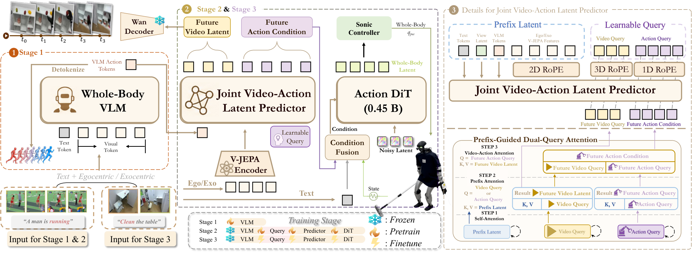

ω-0
未来预测不必长成一段视频：把它压成几个潜在嵌入，只当作动作学习的辅助监督。
ω-0: A Latent Predictive World Action Model for Concurrent Humanoid Loco-Manipulation
11 项家务任务各 10 次试验，全视角变体成功率 81.8%、进度 90.3%，最强基线 DiT4DiT 为 43.6% 与 61.0%。
01这篇要解决什么？
世界动作模型进入人形全身场景时有一个选择要做：未来到底要不要长成像素。这篇选了不长，用冻结编码器抽出的未来观测嵌入当回归目标，动作分支直接去噪出控制器吃得下的全身动作潜变量。对读编排的人，它给的是 WAM 后端在全身任务上的一种最小形态。
02先看一个场景
让人形拖地。拖把要一直贴着地面，机器人同时得迈步、压低躯干、维持平衡。按先走后做的做法，策略会把这件事切成走到位再挥动手臂两段；一到需要边走边保持接触，两段之间的切换就变成停顿与来回修正，拖把也离地了。
03方法怎样运转？

- 01
第一阶段：先让 VLM 学会说全身动作的话
先在统一成 SMPL 的动作上训一个全身 FAST 分词器，把连续轨迹压成动作 token，重建误差走 L1。再用这些 token 当标签微调 Qwen3-VL-2B-Instruct，输入是一句指令、一张当前观测与一个视角 token。产出的隐藏表示后面当动作语义先验用。
- 02
第二阶段：用仿真回放把人类数据换成机器人可执行的监督
公共数据 ARCTIC、Xperience-10M 与 Motion-X 只有视频与人体动作，没有机器人状态与动作潜变量。作者把它们统一成 SMPL 后交给 SONIC 在仿真里批量回放，记录对应的全身动作潜变量与本体状态，跟不住的高动态轨迹丢掉，武术类动作大多在这一步被过滤。
- 03
联合预测器把未来视觉塞进动作查询
前缀由 VLM 特征、T5 文本、视角 token 与冻结 V-JEPA 的当前图像特征拼成。两组可学习查询各司其职：动作查询数等于动作块长度，视频查询对应未来视觉潜变量。两组先各自自注意力，再交叉注意前缀，最后动作查询注意视频查询。视频那一路的监督来自冻结 Wan 编码器。
- 04
动作 DiT 去噪出 SONIC 吃得下的全身潜变量
动作特征与文本特征、状态编码器给出的本体特征融合成条件，动作 DiT 以 x0 预测为目标去噪。第三阶段在真机数据上继续训，并加入训练时 RTC：随机取 0 到 8 帧前缀换成干净潜变量，损失只算非前缀那一段。V-JEPA、Wan 与第一阶段的 VLM 全程冻结。
- 05
部署：滚动时域，前缀来自上一块
每个决策步取头部相机一帧、机器人状态（身体关节、灵巧手关节与躯干姿态的 6D 旋转）与指令，用 DDIM 少步采样出一块动作潜变量，把上一次预测的末几帧当干净前缀以保持衔接，再交给 SONIC 换成全身控制命令。评测里没有独立的成功检测器，终止靠外部设定的时限。
# Stage 1: FAST 分词器(自训) + Qwen3-VL-2B 微调 -> 全身动作 token
# Stage 2: 公共人类数据 -> 统一 SMPL -> SONIC 仿真回放 -> (状态, 动作潜变量)，跟不住的丢弃
p = concat(f_vlm, f_T5(l), view_token, f_VJEPA(o_t)) # V-JEPA / Wan / VLM 全程冻结
q_m, q_v = motion_queries, video_queries # 数目 = 动作块长 / 未来潜变量
q_m, q_v = cross(q_m, p), cross(q_v, p)
h_m = cross(q_m, q_v) # 未来视觉注进动作表示
L = ||DiT(z_t, t | fuse(h_m, f_T5, f_state)) - z0||^2 + lam * ||q_v - Wan(o_future)||^2
while 任务未完成: # 部署
z = ddim_denoise(prefix = cache[-M:]) # RTC：上一块末几帧当干净前缀
sonic(z) # 动作潜变量 -> 全身控制命令
cache = z
# 没有成功检测器；进度按首次失败或不可逆偏离之前的阶段数在环外统计方法与结果的原文定位见本页引用。
04跟着这个场景走一遍
教学推演：回到上面的场景。第一步，拖地这件事要先变成模型说得出口的东西：作者把统一成 SMPL 的动作序列交给全身 FAST 分词器压成离散 token，再用它们微调 Qwen3-VL-2B-Instruct，让视觉语言主干学会把一句指令和一帧画面对上一串动作 token。第二步，真机演示不够，就借公共数据：ARCTIC、Xperience-10M 与 Motion-X 只有视频与人体动作，先统一成 SMPL，再让 SONIC 在仿真里逐条回放，跟得住的留下动作潜变量与本体状态，跟不住的丢掉，武术类动作大多死在这一步。第三步，联合预测器把未来接进来：前缀是 VLM 特征、T5 文本、视角 token 与冻结 V-JEPA 的当前图像，视频查询去回归冻结 Wan 编码器抽出的未来观测嵌入，动作查询再交叉注意视频查询，把这份预测吸进动作表示里。第四步，动作 DiT 以 x0 为目标去噪出全身动作潜变量，第三阶段加上训练时 RTC，随机 0 到 8 帧前缀换成干净潜变量、损失只算后半段。第五步，部署时每步取一帧头部画面与一份本体状态，DDIM 少步采样出一块潜变量，上一块的末几帧当干净前缀保持衔接，SONIC 把潜变量换成全身控制命令，拖把因此能在迈步过程中一直贴着地。这里要停一下：没做到的是判定这一层。系统里没有成功检测器，做砸了只能靠下一帧重新预测；子任务如何划分论文说在附录，而这一版没有附录；评测时限与摔倒计分同样没有写。
05实验到底表现怎样？
ω-HOME 是这篇自采的 40.3 小时、24 项任务数据集，下游 11 项家务全身评测任务从中选出并排除在第二阶段预训练池外。每项跑 10 次，所有方法都在同一批真机数据上训成多任务模型、按同一协议评；指标为整任务成功率、子任务计分与首次失败前的归一化进度。
作者报告的实验结果 · v2
| 表 2 · 11 项家务任务 | 成功率 | 计分（上限 41） | 进度 |
|---|---|---|---|
| π-0.5 | 27.3% | 20.9 | 52.8% |
| ψ-0 | 44.5% | 23.6 | 59.6% |
| DiT4DiT | 43.6% | 23.1 | 61.0% |
| ω-0 Ego | 79.1% | 35.8 | 88.7% |
| ω-0 Omni | 81.8% | 36.7 | 90.3% |
原始证据：三阶段方法：§3 ↗ · ω-HOME 数据集：§4 ↗ · 主结果：表 2 ↗ · 消融与泛化：表 4、表 5 ↗
成功率与进度这两列拉开的幅度不一样：DiT4DiT 进度已有 61.0%，成功率只有 43.6%，说明失败集中在靠后的阶段。ω-0 把两列一起抬到 81.8% 与 90.3%，但这 11 项任务是作者自建的，不是公开基准；ψ-0 用的下层控制器也是 AMO 而不是 SONIC。
06收益来自哪里，又停在哪里？
消融与机制证据
表 4 里掉得最多的是去掉本体状态，成功率降到 60.9%；其次是把当前图像换成 Wan 编码器的 63.6% 与去掉视频查询的 64.5%，去掉 RTC 掉到 71.8%。表 5 更能说明视频查询的作用：跨场景那一栏没有它时只剩 15.0%。
结论的适用边界
模型来源几乎全是现成件：Qwen3-VL-2B-Instruct、V-JEPA 2.1 图像编码器、Wan 视频编码器、T5 文本编码器、SONIC 全身控制器与 FAST 动作分词方案都取自已有工作，其中前几项在第二、三阶段全部冻结。作者训练的是全身 FAST 分词器、第一阶段的 VLM 微调，以及联合视频—动作潜变量预测器、状态编码器、条件融合模块与动作 DiT，三阶段都在 8 张 H100 上跑；真正的前提成本是 40.3 小时、24 项任务的 ω-HOME 数据，加上下游 11 项任务每项约 200 条演示。有几处论文没有给出：动作潜变量的维度与它同 SONIC 参考动作的对应关系没有写；每项任务的子任务划分说在附录里，而这一版没有附录；评测时限与摔倒如何计分同样没有规定。可比性上还有两处要扣住：全视角变体在五项移动量大的任务上吃的是房间里那台外置相机的画面，论文只把外视角描述成训练期的补充监督，没有说明部署时这台相机是否必需；GR00T-N1.7 因为公开推理管线没有 RTC 而按普通顺序分块评测，而表 4 显示 RTC 约值 7 个点。
07放回全书的脉络
对照 EMERGE-Policy 里用的 WAM 后端：那边把想象与评估拆成两个技能，这边把未来压进潜变量，推理时不生成视频。
08把阅读变成一个小研究
在自己的策略上加一个未来嵌入回归头，比较只看当前观测与加上未来监督两种版本的跨场景表现。
先自己回答：这项实验怎样才有解释力？
如果收益只出现在同分布任务上，那更像是多了一个正则项；这篇的证据恰好在跨场景与人类数据迁移那两栏最明显。
- 用自己的话说出这篇改变了哪个模块。
- 画出它的输入、输出和一次失败如何被处理。
- 复述一个结果，同时说清基线、指标与实验条件。这一问不给答案，材料在第 05 节。
先自己答，再看前两问的参考答案
这篇改了哪个模块改的是动作生成这一层里未来信息的形态。它没有换控制器，SONIC 照旧接管平衡与落脚；也没有引入外部规划器、成功检测器或技能库。被换掉的是 WAM 常见的视频中枢：未来不再被生成成像素再反解成动作，而是由一组视频查询去回归冻结编码器抽出的未来观测嵌入，动作查询通过一次交叉注意力把这份预测吸进来，再由动作 DiT 直接去噪出控制器可执行的全身动作潜变量。另一处改动在数据侧：SONIC 仿真回放把人类动作换成机器人可执行的状态与潜变量对。
输入、输出与一次失败如何被处理输入是一句语言指令、一帧当前视觉观测与机器人本体状态。视觉那一路由冻结的 V-JEPA 抽特征，训练时可以是第一人称也可以是第三人称，靠一个可学习的视角 token 区分；本体状态是身体关节位置、灵巧手关节位置与躯干姿态，躯干姿态特意从四元数换成连续的 6D 旋转表示，以免双覆盖带来的跳变。输出有两路，但只有一路会落到机器人上：视频查询输出的未来视觉潜变量仅用于训练监督，需要看图时才另接一个解码器，推理与实时控制都不用它；动作 DiT 输出一块全身动作潜变量，交给 SONIC 换成全身控制命令。执行按滚动时域推进，上一块的末几帧被缓存成这一块去噪的干净前缀，训练时用随机 0 到 8 帧前缀先把这件事练过。失败没有专门通路：系统里没有成功检测器，也没有恢复动作，做砸了之后策略只能在新观测上重新预测下一块。评测侧的处理是把首次失败或不可逆偏离之后的部分不再计入进度，而子任务计分则允许早期出错后，仍为后面做对的子任务拿分。
未来预测不必长成一段视频：把它压成几个潜在嵌入，只当作动作学习的辅助监督。
↗带着位置回到原文
首发日期用于时间排序；以下方法与结果对应 v2。数据为论文作者报告，本讲义没有独立复现实验。
QA就这一页提问或讨论
对某个数字、某条边界或某个推演有疑问，欢迎直接留言：讨论按页面分开，回复会保留在 XinrunXu/awesome-agentic-robotics-papers 的 Discussions 里，需要一个 GitHub 账号。